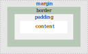

XML
¿Qué es?
Es un lenguaje desarrollado por W3C (World Wide Web Consortium)
que está basado en SGML
Es un metalenguaje, es decir, puede ser empleado para definir otros lenguajes, llamados dialectos XML.
- GML (Geography Markup Languaje, Lenguaje de Marcado Geográfico).
- MathML (Mathematical Markup Language, Lenguaje de Marcado Matemático).
- RSS (Really Simple Syndication, Sindicación Realmente Simple).
- SVG (Scalable Vector Graphics, Gráficos Vectoriales Escalables).
- XHTML (eXtensible HyperText Markup Language, Lenguaje de Marcado de Hipertexto eXtensible).
Características XML
Versatilidad
Se utiliza en muchos campos de la informática (WEB, Bases de Datos, Editores de texto, Hojas de cálculo...)
Estándar
Constituye un estándar por lo que permite el intercambio en cualquier plataforma o S.O.
Metalenguaje
Permite definir otros lenguajes de marcas a partir de él.
Volumen de datos
Permite trabajar con grandes volúmenes de datos.
Herramientas XML
Editor de texto genérico
Para crear documentos XML podemos usar cualquier editor de texto plano.
Editor específico
Podemos usar un editor específico. En este caso sería deseable que contara con herramientas para:
- Ayudar en la gestión de etiquetas
- Control de sintaxis
- Uso de colores para mayor legibilidad
- Validación del documento
Documentos XML bien formados
Para que un documento XML esté bien formado se han de seguir una serie de normas básicas a nivel de sintaxis.
Incluir una declaración XML
- Versión XML (obligatoria)
- Codificación de caracteres utilizada (obligatoria)
- Declaración de independencia (opcional)
< ?xml version="1.0" encoding="URF-8" standalone="yes"? >
Tener un único elemento raíz (padre)
Estructura en árbol invertido
La estructura de cualquier documento XML se puede representar coo un árbol invertido de sus elementos
Declaración de entidades
Todas las entidades usadas se declararán en una DTD interna
Sintaxis correcta
- Todos los elementos deben estar delimitados por una etiqueta inicial y otra final con el mismo nombre.
< elemento > Valor < /elemento >
- Los valores de atributos en XML deben ir entre comillas simples o dobles
< producto codigo="G45" >
- Los elementos vacíos deben terminar con '/' (autocierre) o añadiendo una eqiqueta de fin y no puede haber etiquetas aisladas
< nombre > < /nombre > | < nombre/ >
- Los nombres de los atributos:
- Sigue las mismas normas que los nombres de los elementos
- Deben ser únicos en todo el documento
-
Los comentarios deben escribirse entre los caracteres ""
Instrucciones de porocesamiento en XML
Una instrucción de procesamiento (processing instruction) sirve para
indicar cierta información al programa que procese dicho documento.
Las instrucciones de proceso se escriben empezando con la pareja de caracteres “”.
Sirven, por ejemplo, para asociar una hoja de estilo al documento XMD.
< ?xml-stylesheet type="text/css" href="estilo-propio.css"? >
Espacio de nombres en XML
Resuelven las ambigüedades que surgen por el uso de elementos distintos con el mismo nombre
Se utiliza la etiqueta xmlns para definir ámbitos o espacios de nombres.
Se puede declarar el espacio de nombres directamente en las etiqueta que crean el conflicto o en la etiqueta raíz
xmlns:nombre=”URI”
Validación de documentos XML
Es la comprobación de que:
- El documento es un documento bien formado
- Sigue las reglas dictadas por su DTD
El proceso de validación por tanto verificará:
- La corrección de los datos
- Integridad de los datos
- Entendimiento de la semántica
Con esto, los métodos de validación más conocidos son los siguientes:
Uso de DTD
- Es el más antiguo
- Presenta limitaciones
Uso de XML Schema (XSD)
- Descrita por el W3C
- Consume gran cantidad de recursos y tiempo
Uso de Schematron
- Gran flexibilidad en la descripción de estructuras relacionales
- Se puede combinar con otros lenguajes como Schema
Uso de DTD para XML
El DTD describe los siguientes apartados:
- Elementos
Indican que etiquetas son permitidas y el contenido de dichas etiquetas
- Estructura
Indica el orden en que van las etiquetas en el documento.
- Anidamiento
Indica qué etiquetas van dentro de otras.
Con todo, el uso de DTD sigue presentando ciertas limitaciones:
No permite definir elementos locales que sólo sean válidos dentro de otros elementos.
La jerarquía se debe introducir usando los espacios de nombres en el documento XML lo que añade complejidad a este.
Además no es posible indicar a qué tipo de dato (número, fecha, moneda) ha de corresponder un atributo o el texto de un elemento
El DTD se puede declarar tanto interna como externamente
Declaración interna
< ?xml version="1.0"? >
< !DOCTYPE mensaje [
< !ELEMENT mensaje (para,de,asunto,cuerpo) >
< !ELEMENT para (#PCDATA) >
< !ELEMENT de (#PCDATA) >
< !ELEMENT asunto (#PCDATA) >
< !ELEMENT cuerpo (#PCDATA) >
] >
< mensaje >
< para >María< /para >
< de >Pedro< /de >
< asunto >Recordatorio cita< /asunto >
< cuerpo >No te olvides que paso a recogerte< /cuerpo >
< /mensaje >
Declaración externa
Fichero XML:
< ?xml version="1.0"? >
< !DOCTYPE mensaje SYSTEM "msje.dtd" >
< mensaje >
< para >María< /para >
< de >Pedro< /de >
< asunto >Recordatorio cita< /asunto >
< cuerpo >No te olvides que paso a recogerte< /cuerpo >
< /mensaje >
Componentes
Desde el punto de vista del DTD, todos los documentos XML
se construyen con los siguientes componentes:
- Elementos (ELEMENT)
- Atributos (ATTRIBUTE)
- Entidades (ENTITIES
- PCDATA
- CDATA
Elementos
Elementos vacíos
< !ELEMENT nombre_elemento EMPTY >
Elementos con cualquier contenido
< !ELEMENT nombre_elemento ANY >
Elementos con texto
< !ELEMENT nombre_elemento (#PCDATA) >
Elementos con otros elementos
< !ELEMENT nombre_elemento (elmto1,elmento2,elmto3...) >
Los elementos que aparecen una o más veces llevarán el signo + al lado del nombre del elemento
Los elementos que aparecen cero o más veces llevarán el signo * al lado del nombre del elemento
Los elementos aparecen cero o una vez llevarán el signo ? al lado del nombre del elemento
Los elementos que aparecen En alternancia con otro llevarán el signo | entre los nombtes de los elementos
Los elementos que tienen contenido mixto llevarán #PCDATA al principio de la lista y el signo | entre los nombres de los elementos
Atributos
< !ATTLIST nombre-elemento nombre-atributo tipo valor >
Entidades
< !ENTITY entity-name "entity-value" >
Ejemplo:
< !ENTITY responsable "Martina Wic" >
< !ENTITY firma "ManForts. S.A" >
.
.
.
< autoria > &responsable ; &firma ;< /autoria >
Uso de Schema para XML
XML Schema es un lenguaje de esquema escrito en XML, basado en la gramática y pensado para proporcionar una mayor potencia expresiva que las DTD
El principal aporte de XML Schema es el gran número de
tipos de datos que incorpora, como fechas, números y strings,
como también tipos personalizados simples y complejos.
RA2. HTML y CSS
HTML
HTML (HyperText Markup Language, Lenguaje de Marcado de HiperTexto) es un lenguaje utilizado para la creación de páginas web.
Sintaxis HTML
Un documento HTML contiene marcas (etiquetas), las cuales se escriben empleando los caracteres < y >, además de /.
Por ejemplo, las etiquetas de inicio (< html >) y fin (< /html >) representan al elemento raíz que hay que escribir en todo documento HTML.
Un documento web se forma mediante elementos, los cuales pueden tener atributos.
Los elementos se utilizan tanto para formar la estructura del documento como para mostrar
su contenido. Vamos a ver en detalle estos componentes.
Elementos
Un elemento representa a cualquier parte de una página web. Un párrafo, una tabla, un
elemento de lista, incluso la página de web entera se representan mediante elementos.
Existen varios tipos de elementos que son:
- Elementos vacíos, como
br e img
- Elementos
< template >
- Elementos de tezto sin procesar, como
script y style.
- Elementos de texto escapado, como
textarea title.
- Elementos externos que proceden del espacio de nombres MathGL o SVG.
- Elementos normales, como
p o table.
El siguiente ejemplo ilustra el uso de las etiquetas de apertura y cierre en un elemento
normal, en este caso un párrafo de texto.
< p >El rápido zorro pardo salta encima del perro vago< /p>
Algunos elementos, sin embargo, no tienen contenido. Estos son conocidos como
elementos vacíos. En HTML, la sintaxis anterior no puede usarse para elementos vacíos.
Tales elementos no tienen etiqueta de cierre. El siguiente ejemplo incluye un salto de línea
en el documento web
< br >
Atributos
Los atributos se emplean para definir propiedades de los elementos. Los atributos de
un elemento se ponen dentro de la etiqueta de inicio después del nombre del elemento y
antes de la barra de dividir. Si hay varios se separan por un espacio.
Los atributos modifican el comportamiento básico de los elementos al presentar el
contenido. Algunos son globales y se pueden utilizar en cualquier elemento, otros son solo
específicos de un elemento.
Todos los atributos tienen un nombre y pueden tener un valor, separados por el signo
=, como en el siguiente ejemplo.
< img src=”logotipo.jpg” >
Comentarios
Podemos incluir texto dentro de un documento web que no se verá en la pantalla del
navegador. Este texto suelen ser notas aclaratorias para el propio desarrollador de la página
web. Cualquier texto encerrado entre < !-- y --> será ignorado por el navegador y no se
presentará en pantalla. Por ejemplo
< !-- Esto es un comentario y no se verá en el navegador -- >
Estructura de un documento HTML
Los documentos HTML están altamente estructurados con partes bien diferenciadas
por elementos específicos para definirlas. Un documento HTML está dividido en dos
secciones. La cabecera, la cual se utiliza para contener metadatos del documento, tales
como el título, hojas de estilo, scripts, etc. y el cuerpo, el cual contiene todo el contenido de
la página y que se visualiza en el navegador.
< !DOCTYPE html >
< html lang=”es” >
< head >
< meta charset=”utf-8”/ >
< title >Desarrollo web estático< /title >
< /head >
< body >
< h1 >Bienvenido< /h1 >
< p >Esta es mi primera página web.< /p >
< /body >
< /html >
CSS
¿Qué es CSS?
CSS son las siglas de Cascade Style Sheet. Es un lenguaje para definir el aspecto con el que mostrará una página web diseñada en HTML.
La idea es separar el contenido del diseño. De esta forma se puede adaptar una página web para que se vea en distintos dispositivos sin mucho esfuerzo.
En resumen, con HTML definiremos que contenido tiene nuestra página WEB y con CSS definiremos cómo queremos que se vea ese contenido (colores, tamaño, alineación...)
CSS se puede utilizar relacionado con HTML de 3 formas distintias:
- CSS inline: Se hace utilizando el atributo style dentro de HTML
- Interno: Se utiliza el elemento
< style > dentro de la cabecera < head > del documento HTML
- Externo: Se especifican los estilos en un archivo externo y se relaciona con el archivo HTML incluyendo en este el elemento
< link >
Sintaxis CSS
Un conjunto de reglas CSS consta de un selector y un bloque de declaración.
En el selector indicamos el elemento HTML al que se quiere aplicar el estilo.
En el bloque de declaraciones habrá una o varias declaraciones terminadas en ;
Cada declaración incluye un nombre de propiedad CSS y un valor, separados por dos puntos.
El bloque de declaraciones estará enmarcado entre { }
Selectores CSS
Los selectores se utilizan para seleccionar los elementos HTML a los que queremos aplicar un determinado estilo.
En este apartado veremos los selectores básicos
Selector de elementos
Seleccionará los elementos de elemento
Selector de id
Seleccionará un elemento por el nombre asignado mediante el atributo id
Selector de clases
Selecciona uno a varios elementos por el nombre de la clase a la que pertenece
Selector universal
Se puede añadir una regla de estilo que afecte a todos los elementos del documento HTML. En el siguiente ejemplo, todos los elementos estarán alineados al centro y serán de color verde.
Selector de agrupación
Si hay varios elementos HTML a los que queremos asignar una misma propiedad, no necesitamos escribir una regla para cada uno, podemos agruparlos.
Colores HTML y CSS
En HTML y CSS podemos especificar un color de diferentes formas. Se admiten 140 nombres estándar de color. También podemos especificarlo en RGB y en valores Hexadecimales (HEX).
En la siguiente imagen tienes los nombres de colores admitidos.
Se puede especificar el color de un texto, el color del fondo, y el color del borde de los elementos HTML.
Modelo en cajas
Todos los elementos HTML son considerados por CSS como un conjunto de cajas

- Content: Será el contenido de la caja. Aquí aparecerá el texto, la imagen...
- Padding: Área alrededor del contenido. Será transparente.
- Border: Borde que aparecerá alrededor del Padding
- Margin: Área que aparecerá alrededor del borde. Será transparente.
Ejemplo completo
En el siguiente archivo pdf tienes un ejemplo de lo que debes puedes hacer con lo aprendido hasta el momento:
Descargar ejemplo completo
También puedes descargar el archivo html y la hoja de estilo y para hacer pruebas.
Descargar ejemplo para probar